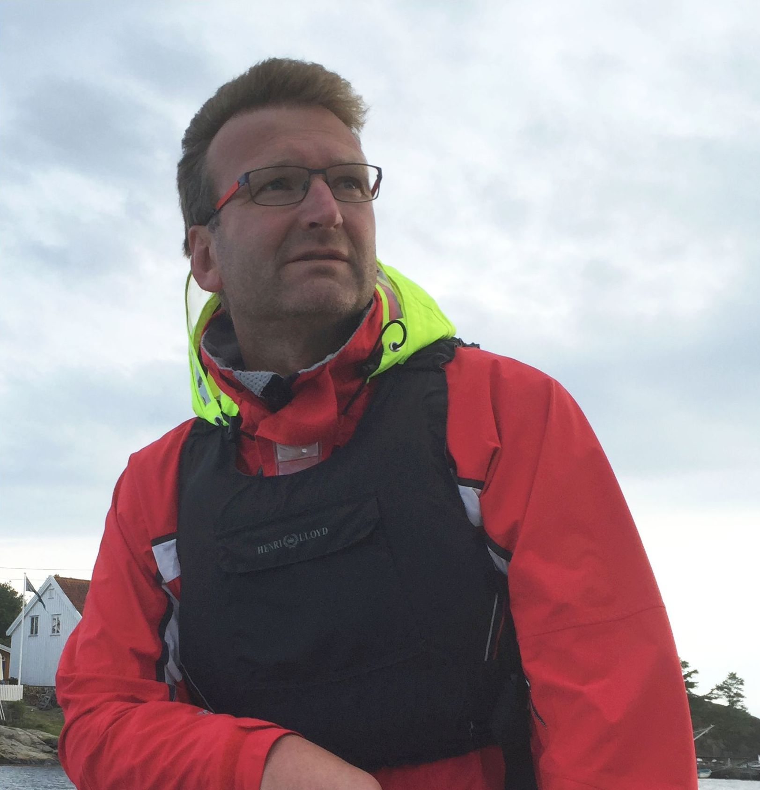

Store miljøhus
- lange responstider og høye interne kostnader
- juniorbemanning i leveransen etter sterk seniorsalg
- lite fleksibilitet for mindre og mellomstore oppdrag
- startkostnader og standardiserte oppsett
Om oss
Selskapet kombinerer tung seniorerfaring med et smidig arbeidsfellesskap av spesialister. Målet er å gi oppdragsgivere bedre fart, bedre presisjon og mer relevant rådgivning.


Grunnlegger
Hisøy Miljø AS er etablert av Stein Broch Olsen etter mer enn 35 år i ledende roller hos blant annet HPC, Asplan Viak, Sweco, Rambøll og COWI. Han har bygget opp miljøfaglige enheter, ledet vann- og miljøsatsinger og arbeidet strategisk med marked, fag og produktutvikling.
Erfaringen spenner fra forurenset grunn og marine sedimenter til klimatilpasning, overvann, mikroplast, miljøovervåking og store komplekse utbyggings- og industriprosjekter.
Arbeidsmodell
Ekspertmiljø
Vannkvalitet, vannbehandling, mikroplast og klimaeffekter.
Marine sedimenter, forurenset grunn, biota og EDD.
Klimatilpasning, miljøstrategi, overvann og marin overvåking.
Analytisk miljøkjemi, sporstoffer og passive prøvetakere.
Spredning av forurensning til jord og sedimenter.
Naturkartlegging, arboristfag, NiN og naturmangfold.
Hydrogeologi, grunnvann og modellering.
Marin geologi, sedimentologi og mikropaleontologi.
Jordvern, planprosesser, landskap og bygningsrett.
Kystteknikk, offshore, metocean og marin prosjektering.
Marin NiN 3 og bred faglig forankring i natur- og vannmiljø.
Oppdrag i hele Norge, med nettverk og erfaring også i Norden og Europa.
Vi samarbeider blant annet med Cautus GEO AS, BADR AS, BioREM AS, ExposMeter AB og flere uavhengige spesialister.